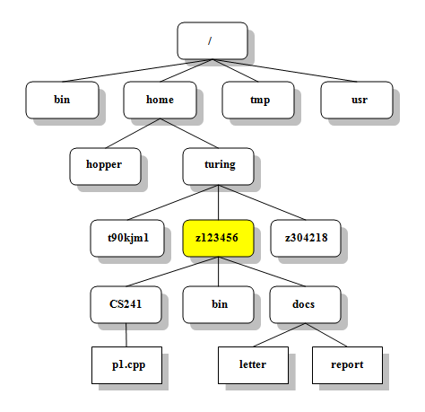

Getting Started
Welcome to the first part of your journey to learning Unix. Here you will learn all the things you need to know before starting with commands. The topics will include an explanation of what Unix is, why we are using it, an introduction to file structure, and what the terminal is.
What is Unix
Unix is a computer operating system that can handle activities from multiple users at the same time. Multitasking can be done by a user. Unix is also the first operating system to be written in a higher-level language (C Language). Being written in C allowed the operating system to be ported to other machines with minimal adaptations.
Why use Unix? (sub head under what is unix?)
Unix is designed to share! In web development, you usually work in groups and need to share information easily with your peers. It is easy to install and more than one person can log in at a time to do work. Unix is also more secure than other operating systems. This is because you can control all processes in Unix.
File Structure
Unix is organized in a hierarchical file structure. This allows for easier access and maintenance of data. This should be familiar to Microsoft Windows users because they use the same structure.
The top-level directory is called root(written as slash /). From the root, the tree grows downward.
At the end of each path, an ordinary file or directory will be found. In this diagram, ordinary files are rectangles and directories have curved edges.
Ordinary files are normal files. They are files that can hold documents, pictures, programs, and other kinds of data but do not support other paths.
Directories can hold ordinary files or more directories allowing growth. They are also known as folders. Directories directly connected by a path are called parents (closer to the root) and children (farther from the root).

Filenames (sub head)
All files have a name. The names for files can reach up to 255 characters long. No two names in a directory are the same. If files are in separate directories they can share the same name. In Unix, the operating system is case-sensitive. This means you can name a file monday, Monday, or MONDAY and this would represent three different files.
These are the characters you can use to name your files.
- Uppercase letters (A-Z)
- Lowercase letters (a-z)
- Numbers (0-9)
- Underscore( _ )
- Period ( . )
- Comma ( , )
A file that begins with a period is called a hidden file. When using the command “ls”, hidden files will not appear. Do not worry, you can still see these files if you use the command “ls -a”. We will go in-depth about this in a later section.
Pathnames (sub head)